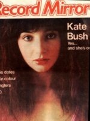

To the Reaching Out (Interviews) Table of Contents

To
the Reaching Out (Interviews) Table of Contents

(Cover
courtesy of Emmy May Lombaerts)
Date: Tue, 30 Aug 88 13:44 PDT
From:
IED0DXM%OAC.UCLA.EDU@MITVMA.MIT.EDU
Subject: Record Mirror, by Mary Ann
Ellis, Febr. 1978
Kate's Fairy Tale
<The following interview by Mary Ann Ellis appeared in "Record Mirror" magazine in February 1978. It is one of the earliest pieces ever written about Kate Bush. In it Kate makes several statements which she will later amend or repudiate altogether, and she has not yet trained herself to exclude all negative feelings and opinions from her conversation. Edited by Andrew Marvick.>
Little girl lost in the huge plush armchair, tiny and bright in day-glo pink trousers, red socks, sky-high heels. A puckish, attractive face peeps out from beneath masses of shaggy earth-red hair.
She's friendly, smiles a lot, even an occasional giggle. Drinks copious amounts of tea and insists as she lights another extra-mild that she's trying to give up smoking. Little girl expletives like "amazing", "great" and "golly" punctuate her conversation.
Just a little nervous, a shade hesitant. But then she is only nineteen. This "she" is Kate Bush, singer/songwriter. She's just released her first album containing thirteen self-penned songs including her current hit single, the quavering, wavering "Wuthering Heights".
Although Kate has been developing a relationship with the piano since she was a child, her musical talents were once channeled in another direction.
Just after she left school at the age of sixteen she went to see Lindsay Kemp in a performance of the mime venue "Flowers". "I remember it so well. I thought that if one person could actually produce the music themselves and give him- or herself physically at the same time, then you'd get double energy coming from one person. It could only be stronger, and I thought, 'Golly, that's what I want to do.'"
Kate trained in mime and modern dance with Lindsay for a short period until he went off to Australia. Then she started going to dance classes at The Dance Centre in London's Covent Garden.
"I loved that," she says with real enthusiasm. "It's the only place you can go and learn to dance withough qualifications, which I didn't have. You pay by lesson, and even though I was sixteen and had never danced before, I did make great progress."
At the same time, back at the piano, Kate was still singing and writing songs.
"The next bit's real fairy tale stuff. One day, along comes this friend of my brother's. He worked in the record business himself, and thought he might be able to help me make some contacts. Well, he knew Pink Floyd from Cambridge and he asked Dave Gilmour to hear me.
"I was absolutely terrified at the prospect of meeting him, but he was so sweet and kind, so human. Well, I did a few songs for him and he decided that the best thing for me to do would be to go into a studio and make a proper demonstration tape with arrangements and a producer. Subsequently Dave put up the money for me to go into the studios and cut three tracks, two of which are included on the album. And it was that tape which got me the EMI contract."
<If this is indeed all that Kate said, it's interesting that she deliberately simplified the various stages that led to her signing with EMI (see chronology).>
She stops and gestures vaguely. Her eyes light up simultaneously with a cigarette as another cup of tea arrives.
"That was all two years ago now. Since then I've been singing, playing and writing until we made the album last summer. Originally it was to be released last autumn but it kept getting delayed. I'm glad we waited till 1978, though. It kind of signifies it all starting with the new year for me."
That fascinating single; I tell her I like it a lot. She grins. Apparently Dusty Springfield likes it a lot, too. Her grin widens into disbelief. "Really? I'm glad. That's amazing." Miles of smile. She twiddles nervously with one of her dangling silvery earrings and produces another extra-mild.
"When I first read "Wuthering Heights" I thought the story was so strong. This young girl in an era when the female role was so inferior, and she was coming out with this passionate, heavy stuff. Great subject-matter for a song.
"I loved writing it. It was a real challenge to precis the whole mood of a book into such a short piece of prose. Also, when I was a child I was always called Cathy, not Kate, and I just found myself able to relate to her as a character. It's so important to put youself in the role of the person in a song. There's no half measures. When I sing that song I am Cathy."
Her face collapses back into smiles.
"Gosh, I sound so intense. "Wuthering Heights" is so important to me. It had to be the single. To me it was the only one. I had to fight off a few other people's opinions, but in the end they agreed with me.
"I was amazed at the response, though, truly overwhelmed."
If you haven't heard the single yet, talk amongst yourselves for a few minutes more. Kate's amazing vocals on both it and the album are schizophrenic. A melange of low/high, deep/soft, passionate/indifferent notes. Inevitably people will compare her to other female vocalists such as Linda Lewis and Joan Armatrading, who share similar extremes in their vocal ranges.
"Yes, people keep saying this to me," says Kate thoughtfully. "I guess I can sing pretty high."
"Wuthering Heights" apart, the majority of songs on the album can be categorised as love songs. "But you're so young, dear." Not my comment, but an attitude guaranteed to make Kate bristle.
"I'm nineteen, but so what? I've had experiences, too. A lot of my songs are about my own traumas. The best time for writing is when you're going though a heavy time. You have an enormous amount of energy. The best way to deal with it is not to bottle it up or take it out on someone else, but to channel it into your writing.
"You get ideas for songs from all sorts of situations. I just start playing the piano and the chords start telling me something. Lyrics for me just seem to go with the tune, very much hand in hand. Some lyrics take a long time to come, others just come out like..." She gestures wildly with her hands. "...like...diarrhoea."
Being nineteen and attractive must make it harder for a woman to succeed in rock'n'roll. By succeed I mean to be taken seriously and not just be regarded as a sex object/symbol/body.
"I want it to stand on the weight of my work, not what I look like. I realise people are going to capitalise on it. It annoys me, though. Why should people want to know about my sex life? It's completely irrelevant to what I'm doing. I give them everything they need to know about me in my songs, because they are personal songs.
"Being regarded as a sex object just gets in the way most of the time unless it's relevant to the role I'm playing in the song. Guys get it, of course, but only those that seem to ask for it. Girls seem to get it whether they want to be regarded in that way or not. To overplay it is wrong. It can't possibly last."
Kate has just returned from recording a show in Germany.
"A fascinating experience," she enthuses, tweaking an earring. Nervous habits die hard. "The show was filmed in Cologne--a great place. The actual studio was an old tram shed with an enormous stage. I did two songs. One with my newly formed band and the other I mimed to backing tapes. For "Wuthering Heights" we had backdrops which helped to set the scene. All these black rolling hills with lightning bolts painted in, and in the middle of it all this dirty great big volcano."
Volcano?
"Yes," she giggles. "Still, they did their best. Obviously they're not that familiar with the scenery on the Yorkshire moors."
The extra-milds make another appearance. The teacup is drained. Suddenly there's an explosion of music from the next room. We both jump, then laugh. Then silence again.
"It's a bit like home. There's always noise and things going on in the next room all the time. My parents have been marvellous. They haven't got too excited about my success, but they're very pleased for me. You have to remember they've been around when I was up in my little room screaming my head off and plonking away at the piano. That seems such a long time ago now.
"I'm really not sure how I'm going to develop from now, what direction my writing will take."
Any more songs based on books in the offing?
"Do you know, it's never occurred to me. I'd like to write another song connected to a book if the story was strong enough. It's not important, though. I just want to carry on exploring. I like to write music about subjects I haven't touched before. That's my favourite thing."

To
the Reaching Out (Interviews) Table of Contents
"The pull and the push of it all..." - Kate Bush
Reaching Out
is a
Marvick - Hill
Willker -
Mapes
Fitzgerald-Morris
Grepel - Love-Hounds
Presentation
{kind=link}